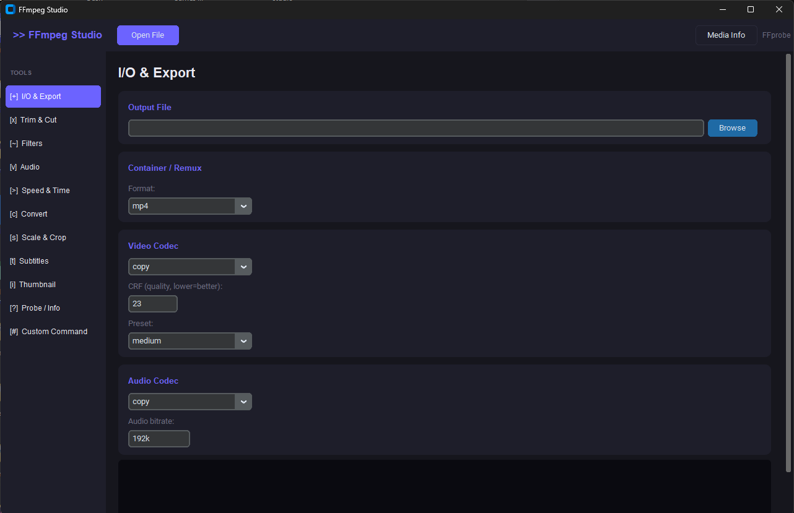

A modern, high-performance GUI for FFmpeg built with Python.
Convert, trim, and optimize your media with ease.

Granular control over Video/Audio codecs, CRF quality, and encoding speed presets.
No need to manually install FFmpeg. The app handles the setup for you automatically.
Built with CustomTkinter for a sleek, hardware-accelerated dark mode experience.